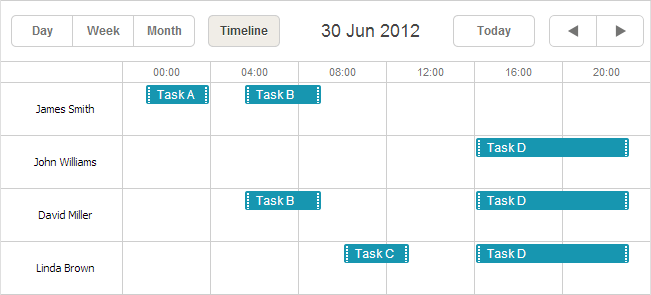

Available only in PRO Edition
Timeline View
This view is available in the Scheduler PRO version only.
The Timeline view allows you to visualize events horizontally with separate timelines arranged from left to right.
Initialization
To add the Timeline view to the scheduler, follow these steps:
- Include the Timeline code file on the page:
- ext/dhtmlxscheduler_timeline.js - for the 'Bar' and 'Cell' modes
- ext/dhtmlxscheduler_timeline.js, ext/dhtmlxscheduler_treetimeline.js - for the 'Tree' mode
- ext/dhtmlxscheduler_timeline.js, ext/dhtmlxscheduler_daytimeline.js - for the 'Days' mode
- Add the view's tab to the scheduler's markup:
<div id="scheduler_here" class="dhx_cal_container" ...> <div class="dhx_cal_navline"> ... <div class="dhx_cal_tab" name="timeline_tab" style="right:280px;"></div> </div> ... </div>
- Set the label for the tab:
//'timeline_tab' is the name of our div scheduler.locale.labels.timeline_tab ="Timeline";
- Call the createTimelineView method:
scheduler.createTimelineView({ name:"timeline", x_unit:"minute", // measuring unit of the X-Axis. x_date:"%H:%i", // date format of the X-Axis x_step:30, // X-Axis step in 'x_unit's x_size:24, // X-Axis length specified as the total number of 'x_step's x_start:16, // X-Axis offset in 'x_unit's x_length:48, // number of 'x_step's that will be scrolled at a time y_unit: // sections of the view (titles of Y-Axis) [{key:1, label:"Section A"}, {key:2, label:"Section B"}, {key:3, label:"Section C"}, {key:4, label:"Section D"}], y_property:"section_id", // mapped data property render:"bar" // view mode });
In the 'Days' mode, time scale must cover 1 day exactly. If your configuration specifies a shorter or longer period - timeline will be rendered incorrectly.
Scale configuration example
In spite of a big number of parameters used in the createTimelineView method, it's quite simple.
Let's consider an example: the time scale from 09:00 to 15:00 with 30 minutes step that is scrolled by days.
{
x_unit:"minute",// the scale parameters will be calculated in minutes
x_step:30, //sets the '30 minute' step, e.g. 09:00 - 09:30
x_size:12, // the number of '30 minute's in the interval 09:00 - 15:00
// 15 - 9 = 6 hours = 360 minutes = 360/30 = 12
x_start:18, //scale starts from 09:00,i.e. 9 hours from the default start- 00:00.
// 9 hours = 540 minutes = 540/30 = 18 'x_step's
x_length:48,//scrolls a day:1 day= 24 hours= 1440 minutes= 1440/30= 48 'x_step's
...
}
Timeline view configuration
All template functions the names of which have {timeline}_some in their name should be specified after the view's creation, since they are defined dynamically from the timeline constructor and will be overwritten by the createTimelineView call.
Setting the start date for the Timeline view
For example, let's have a look how the start date of the Timeline view should be set.
The start date of any view is defined by a scheduler.date[
// set the 1st day of the week
scheduler.config.start_on_monday = true;
// create a timeline in the scheduler
scheduler.createTimelineView({
name: "timeline",
render: "tree",
days: 7,
folder_dy: 20,
x_unit: "day",
x_date: "%D %j %F",
x_step: 1,
x_size: 7,
x_start: 0,
x_length: 7,
y_unit:[],
y_property: "section_id"
});
// configure the timeline after it's created
scheduler.date.timeline_start = scheduler.date.week_start;
// initialize a scheduler
scheduler.init("timeline_tree",new Date(),"timeline");
Timeline object API
There is a set of methods you can use to work with the Timeline view.
Creating a timeline view
First, you need to create a timeline instance in the scheduler:
scheduler.createTimelineView({
name:'timeline',
...
});
var timeline = scheduler.matrix.timeline;
After that you can make use of the methods enumerated below.
Getting a timeline view
To get a timeline view object, use the getView method. It takes the name of the view as a parameter. However, if no parameter has been passed, the method returns the current view.
var timeline = scheduler.getView();
timeline.x_size = 8;
scheduler.setCurrentView();
Setting the scale range
To specify the scale range, use the setRange() method. It takes two parameters:
- startDate - (Date) the start date of the range
- endDate - (Date) the end date of the range
timeline.setRange(startDate, endDate);
Scrolling to particular position/date/section
The functionality described in this section works only for the Timeline with a horizontal scroll enabled.
In case you need to scroll scheduler to a certain point, you should use the scrollTo() method. Its usage is rather versatile, depending on the passed parameters:
- to scroll to a specific date, pass the date in question to the method:
timeline.scrollTo(new Date());
- to scroll to a specific position, pass the desired point as a pixel value:
timeline.scrollTo(500);
- to scroll both horizontally and vertically to a specific section on a particular date, pass an object with the date and the section key:
timeline.scrollTo({date:new Date(), section:4);
- to scroll to a specific position both horizontally and vertically, pass an object with left/top pixel values:
timeline.scrollTo({left:300, top:500});
Getting coordinates of a specific position
- to get the X-coordinate of a specific date on the scale, use the posFromDate() method. Pass the date as a parameter:
var left = timeline.posFromDate(new Date());
The method returns 0 or the maximum X-coordinate for dates outside the scale.
- to get the Y-coordinate of a specific row, use the posFromSection() method. It takes as a parameter the number of the section:
var top = timeline.posFromSection(section.key);
The method returns -1 if the row is not found.
Getting scroll position
To return the current position of the scrollbar in the timeline, use the timeline.getScrollPosition() method. It returns an object with the current position of the scrollbar.
var timeline = scheduler.getView();
timeline.getScrollPosition(); // { left: 0, top: 0 }
The returned object contains two properties:
- left - (number) the left coordinate of the scroll position
- top - (number) the top coordinate of the scroll position
You can also use the onScroll event handler to catch the new scroll position. The handler function takes two parameters:
- left - (number) the left coordinate of the scroll position
- top - (number) the top coordinate of the scroll position
var timeline = scheduler.getView();
timeline.attachEvent("onScroll", function(left, top){});
Getting events assigned to some section
It is possible to get an array of events assigned to the specified section with the timeline.selectEvents() method. It takes as a paramter the configuration object of a section of the following type:
{
section: string|number
date: Date
selectNested: boolean
}
where:
- section - the id of a section
- date - optional, if specified the method will return events overlapping the provided date column
- selectNested - optional, if set to true and section is a tree timeline folder the method will select events from all nested sections
and returns an array of event objects.
var timeline = scheduler.getView();
var events = timeline.selectEvents({
section: section.key,
date: date,
selectNested: true
});
Dynamic сhange of properties
All defined timeline objects are stored in the scheduler.matrix object. You can access the configuration of any timeline view by its name and change any property. Changes will be applied as soon as you update the scheduler:
scheduler.getView('timeline').x_size = 12;
scheduler.setCurrentView(); // redraws scheduler
where 'timeline' is the name of the timeline view as specified in the createTimelineView method:
scheduler.createTimelineView({
name:'timeline',
...
});
Data loading
Unlike basic views (such as Day, Month, Year etc.), multiple-resource views (that are Units and Timeline) require data items to have one more mandatory field:
- y_property - (string) the name of a data property that will be used to assign events to certain sections.
scheduler.createTimelineView({
name:"timeline",
...
y_unit:
[{key:1, label:"Room 1"},
{key:2, label:"Room 2"},
{key:3, label:"Room 3"}],
y_property:"room_id",
});
scheduler.init('scheduler_here');
scheduler.parse([
{text:"Conference", start_date:"17/09/2012 12:00", end_date:"18/09/2012 21:00",
room_id:"1"},
{text:"Meeting", start_date:"17/09/2012 09:00", end_date:"17/09/2012 21:00",
room_id:"2"},
{text:"Conference", start_date:"17/09/2012 15:00", end_date:"18/09/2012 15:00",
room_id:"3"}
]);
Assignment of events to several sections
Scheduler provides the possibility to assign events to several sections.

To enable the possibility:
- Include the ext/dhtmlxscheduler_multisection.js file on the page
- Set the multisection property to true
- (Optional) Include "ext/dhtmlxscheduler_multiselect.js" file on the page to use Multiselect control in the scheduler (a comfortable way to switch between sections)
<script src="codebase/dhtmlxscheduler.js"></script>
<script src="codebase/ext/dhtmlxscheduler_multisection.js"></script> <link rel="stylesheet" href="codebase/dhtmlxscheduler.css" type="text/css">
<script src="codebase/ext/dhtmlxscheduler_timeline.js"></script>
<script src="codebase/ext/dhtmlxscheduler_multiselect.js"></script>
<script> scheduler.config.multisection = true; scheduler.init('scheduler_here');
</script>
After this you can specify several sections (by default, delimited with a comma) in the related data property of the event and the event will be rendered in all specified sections:
scheduler.createTimelineView({
name: "timeline",
y_unit: [
{key: 1, label: "James Smith"},
{key: 2, label: "John Williams"},
{key: 3, label: "David Miller"},
{key: 4, label: "Linda Brown"}],
y_property: "section_id", ...
});
scheduler.init('scheduler_here', new Date(2012, 5, 30), "timeline");
scheduler.parse([
{ id:1, text:"Task A", section_id:'1', ...}, { id:2, text:"Task B", section_id:'1,3', ...}, { id:3, text:"Task C", section_id:'4', ...}, { id:4, text:"Task D", section_id:'2,3,4', ...}]);
Related sample: Multisection events in Timeline and Units view
View modes
The view has 4 modes:
- Bar
Related sample: Bar mode
- Cell (default)
Related sample: Cell mode
- Tree
Related sample: Tree mode
- Days

Related sample: Days as Timeline rows
The needed mode is set by the render parameter:
scheduler.createTimelineView({
name: "timeline",
render: "bar"
});
'Days' mode details
While working with the Days mode, please remember the following things:
- Time scale must cover 1 day exactly. If your configuration specifies a shorter or longer period, timeline will be rendered incorrectly:
scheduler.createTimelineView({ name:"timeline", render:"days", days:7, //time scale is configured to cover 1 day x_unit:"minute", x_date:"%H:%i", x_step:30, x_size:24, x_start:16 });
- The mode doesn't support Blocking and Marking functionality
-
The format of the Y-Axis labels is specified by the scale_label template:
scheduler.templates.timeline_scale_label = function(key, label, section){ // specifies the same labels as in the Day view return scheduler.templates.day_date(label); };
- To change the start day of the displayable interval, use the scheduler.date.{timeline_name}_start function:
scheduler.date.timeline_start = function (date) { date = scheduler.date.week_start(date); date = scheduler.date.add(date, config.x_step*config.x_start, config.x_unit); return date; };
Time interval for view cells
By default, cells of the view have a one-day interval and locate events inside, according to this time. To change the default interval (for example, to leave only working hours and remove rarely used ones), use one of 2 ways:
- the first_hour and last_hour parameters:
//the cell interval will be daytime from 10.00 till 18.00
scheduler.createTimelineView({
name:"timeline",
first_hour:10,
last_hour:18
});
Related sample: Changing the time interval for the view cells
- the ignore_{viewName} property, where the viewName part is the value of the name option of the object passed to the createTimelineView method. ignore_{viewName} is a function that takes the cell date as a parameter, and 'removes' the hours for which the 'true' value is returned:
//the cell interval will be daytime from 10.00 till 18.00
scheduler.ignore_timeline = function(date){ // "timeline" is the name of the view
// non-working hours
if (date.getHours() < 10 || date.getHours() > 18) return true;
};
The ignore_{viewName} method is described in more detail in the section Hiding Time Units in X-Axis of View.
Related sample: Hiding hours in the scale of Timeline view
Please pay attention that you can't specify the ignored interval equal or larger than the common interval set for the timeline.
For instance, if you set a one-day interval for a timeline and try to "ignore" some day via the ignore_{viewName} property, it won't work. Scheduler will show the ignored day, although without rendering a scale with events for it.
To skip the "ignored" interval in the described case, you need to dynamically change the x_length setting in the scheduler._click.dhx_cal_next_button function. For example, to ignore weekends and totally remove them from the timeline, you can use the following code:
scheduler._click.dhx_cal_next_button = function(dummy,step){
var mode = scheduler.getState().mode;
var minDate = scheduler.getState().min_date;
var formFunc = scheduler.date.date_to_str("%D");
// ignoring weekends
if(mode=='timeline'){
if((formFunc(minDate)=='Fri' && step!=-1) || (formFunc(minDate)=='Mon' && step==-1))
scheduler.matrix['timeline'].x_length = 24*3;
else
scheduler.matrix['timeline'].x_length = 24;
}
scheduler.setCurrentView(scheduler.date.add(
scheduler.date[scheduler._mode+"_start"](scheduler._date),(step||1),scheduler._mode));
};
Related sample: Ignoring weekends
Data for Y-Axis sections in the 'Bar' and 'Cell' modes
To set values for the Y-Axis in the 'Bar' and 'Cell' modes, use the y_unit parameter:
scheduler.createTimelineView({
name:"timeline",
...
y_unit:[
{key:1, label:"James Smith"},
{key:2, label:"John Williams"},
{key:3, label:"David Miller"},
{key:4, label:"Linda Brown"}
]
});
To be correctly processed, y_unit items must have 2 mandatory properties:
- key - the item's id
- label - the item's label
Data for Y-Axis sections in the 'Tree' mode
The 'Tree' mode allows grouping items by creating multi-level folders. In addition to more convenient representation, it allows you to specify an event not only for individual event holder, but also for the whole folder (any level).
To set values for the 'Tree' timeline, use the same y_unit parameter that is used in the 'Bar' and 'Cell' modes, but with a wider set of properties:
scheduler.createTimelineView({
name: "timeline",
render:"tree",
...
y_unit:[
{key:"production", label:"Production Department", children:[
{key:"p1", label:"Managers", children:[
{key:"pm1", label:"John Williams"},
{key:"pm2", label:"David Miller"}
]},
{key:"p2", label:"Linda Brown"},
{key:"p3", label:"George Lucas"}
]},
{key:"sales", label:"Sales and Marketing", children:[
{key:"s1", label:"Kate Moss"},
{key:"s2", label:"Dian Fossey"}
]}
]
});
The y_unit items have:
- 2 mandatory properties:
- key - the item's id
- label - the item's label
- 2 optional properties:
- open - specifies, whether the section will be opened initially
- children - an array of nested items' objects
Data for Y-Axis sections in the 'Days' mode
To set values for the Y-Axis in the 'Days' mode, use the days parameter:
scheduler.createTimelineView({
name:"timeline",
...
days:7 //the number of items (i.e. days) in the Y-Axis
});
Data for Y-Axis sections from the server
To load Y-Axis sections from the server, use:
- On the client side - the serverList method:
scheduler.createTimelineView({
name:"timeline",
...
y_unit:scheduler.serverList("sections"),
});
where serverList returns a list of options with the name 'sections'.
- On the server side
The data response for the load method should contain a collection with the server list name specified in JSON of the following format.
You can also use the OptionsConnector connector:
<?php
include('connector-php/codebase/scheduler_connector.php');//includes the file
$res=mysql_connect("localhost","root","");//connects to the server with our DB
mysql_select_db("sampleDB");//connects to the DB.'sampleDB' is the DB's name
$list = new OptionsConnector($res, $dbtype);
$list->render_table("types","type_id","type_id(value),name(label)");
$scheduler = new schedulerConnector($res, $dbtype);
//we set the same name that was used on the client side - 'sections'
$scheduler->set_options("sections", $list);
$scheduler->render_table("events","id","start_date,end_date,text,type_id");
?>

The data response should have the JSON format that includes the "collections" hash of necessary collections to be referenced through the serverList method.
Note, you can create a collection manually, instead of using dhtmlxConnector. In this case, to update the collection, use the updateCollection method:
scheduler.updateCollection("sections", new_sections_array);
Related sample: Loading Units sections from the server
Dynamic addition/removal of items
To add/delete items on the fly, use the following methods:
scheduler.createTimelineView({
name: "timeline",
render:"tree",
...
y_unit:[
{key:"production", label:"Production Department", children:[
{key:"p1", label:"Managers", children:[
{key:"pm1", label:"John Williams"},
{key:"pm2", label:"David Miller"}
]},
{key:"p2", label:"Linda Brown"},
{key:"p3", label:"George Lucas"}
]},
{key:"sales", label:"Sales and Marketing", children:[
{key:"s1", label:"Kate Moss"},
{key:"s2", label:"Dian Fossey"}
]}
]
});
scheduler.addSection( {key:"pm3", label:"James Smith"}, "p1");
scheduler.addSection( {key:"s3", label:"Alex White"}, "sales");
scheduler.deleteSection("p3");
To use the addSection and deleteSection methods, the 'Tree' timeline must be currently opened in the scheduler.
Second X-Axis
The second X-Axis is placed on top of the default one and serves to group time intervals of the original scale.
You can add the second scale by using the second_scale parameter:
scheduler.createTimelineView({
name: "timeline",
...
second_scale:{
x_unit: "day", // the measuring unit of the axis (by default, 'minute')
x_date: "%F %d" //the date format of the axis ("July 01")
}
});
Related sample: Second time scale (X-Axis)
Stretching events over the cell
To make an event occupy the entire cell width, no matter how long this event lasts, use the round_position parameter:
scheduler.createTimelineView({
name:"timeline",
render:"bar",
...
round_position:true
});
round_position:false(default behavior)
round_position:true
Sorting of events
By default, the Timeline view sorts events by the start date. If you want to apply a custom sorting rule, define the related logic in a function and set this function as the value of the sort parameter:
This function will be called for each pair of adjacent values and return 1,-1 or 0:
- 1 - an object with the first value in pair must go before the second one;
- -1 - the second object goes before the first one;
- 0 - the objects are equal.
Sorting by the text length
scheduler.createTimelineView({
name: "timeline",
render:"bar",
...
sort:function(a, b){
if (a.text.length > b.text.length) {
// display a before b
return -1;
} else if(a.text.length < b.text.length) {
return 1;
} else{
return +a.start_date > +b.start_date ? 1 : -1;
}
}
});
Horizontal scroll
There is a possibility to enable a horizontal scroll in the Timeline view to switch between days/weeks/months without clicking the navigation buttons.
In order to add a horizontal scrollbar into the timeline, you should use the scrollable property of the createTimelineView method. There are also the column_width and scroll_position options that can be used to configure the horizontal scroll as it's shown in the example below:
scheduler.createTimelineView({
name: "timeline",
x_unit: "minute",
x_date: "%H:%i",
x_step: 30,
x_size: 24*7,
x_start: 16,
x_length: 48,
y_unit: sections,
y_property: "section_id",
render: "bar",
scrollable: true, column_width: 70, scroll_position:new Date(2018, 0, 15) });
- scrollable - (boolean) enables horizontal scroll in the Timeline view, false by default. If false or undefined, date columns will shrink to fit the time scale into the viewport width. If true, date columns will not shrink less than the column_width value, a horizontal scroll bar will appear when necessary.
- column_width - (boolean) optional, defines the minimal width of timeline date columns, 100 by default
- scroll_position - (Date) optional, renders timeline scrolled to a specific position, takes the same arguments as
timeline.scrollTo(), i.e. the date you want timeline to be scrolled to after rendering
The smart rendering feature is enabled in a scrollable Timeline by default. This functionality optimizes the performance of the Timeline view as it allows rendering only the rows, columns, and events visible on the screen, while other elements are being rendered during scrolling of the timeline.
Related sample: Horizontal scroll for Timeline view
Please note that the timeline scroll is not finite and the time range is limited. To switch between time intervals, you still need to use the navigation controls.
Autoscroll configuration
Autoscroll is enabled by default when you move/resize an event to the edge of the timeline viewport.
There is a possibility to adjust sensibility and speed of autoscroll via the related properties of the autoscroll object. Use it inside of the the createTimelineView method:
scheduler.createTimelineView({
name:"timeline",
...
autoscroll: { range_x: 200, range_y: 100, speed_x: 20, speed_y: 10 } });
- range_x - (number) horizontal autoscroll distance from the edge of the data area
- range_y - (number) vertical autoscroll distance from the edge of the data area
- speed_x - (number) horizontal autoscroll speed
- speed_y - (number) vertical autoscroll speed
Header of the sections column
By default the header of the column with sections is empty. You can add a label into this header via the locale object in the following way:
scheduler.locale.labels.<timelineName>_scale_header = "Label";
where
scheduler.locale.labels.timeline_scale_header = "Users";
Custom content in cells
It is possible to render custom content in cell of a Timeline view, not only in the Cell mode, as it demonstrates the sample below:
You can also specify a template for the content of cells in all other modes of the Timeline view.
Related sample: Display labels in timeline cells
To enable this functionality for a particular timeline, make use of the cell_template property while creating the timeline with the createTimelineView method.
scheduler.createTimelineView({
cell_template: true,
...
});
After that the template you've specified for this timeline will be called. For example, this is how you can show the number of events for each date in the "tree" timeline mode:
<style>
.dhx_matrix_cell div.load-marker{
position: absolute;
width: 40%;
height: 25px;
transform: translate(70%, 20%);
line-height: 25px;
text-align: center;
border-radius: 7px;
color: white;
}
.load-marker-no{
background: #e0e0e0;
}
.load-marker-light{
background: #aed581;
}
.load-marker-high{
background: #ff8a65;
}
</style>
scheduler.templates.timeline_cell_value = function (evs, date, section){
if(section.children){
var timeline = scheduler.getView();
var events = timeline.selectEvents({
section: section.key,
date: date,
selectNested: true
});
var className = "";
if(!events.length){
className = "load-marker-no";
}else if(events.length < 3){
className = "load-marker-light";
}else{
className = "load-marker-high";
}
return "<div class='load-marker "+className+"'>"+
events.length
+"</div>";
}
return "";
};
Related sample: Display labels in timeline cells
Related guides
- Common Config Instructions
- Timeline View Templates
- Loading Data
- Blocking and Marking Dates
- Skins
- Localization